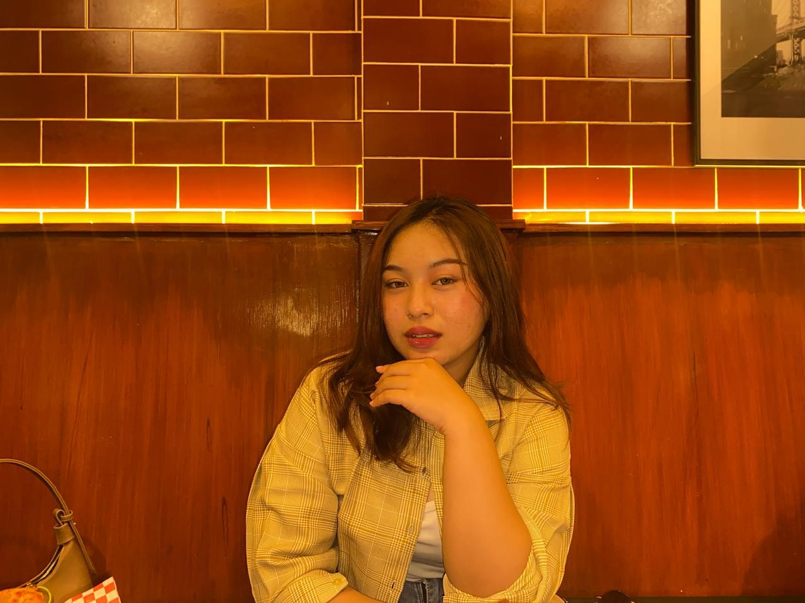

Membawa Ketelitian Kimia Analis untuk membangun Efisiensi Sistem Operasional yang unggul.

"Saya adalah profesional yang berorientasi pada detail dengan pondasi kuat di Analisis Kimia. Saya menggunakan disiplin laboratorium untuk membangun sistem operasional yang efisien, transparan, dan minim kesalahan."
SMKN 5 Surabaya
Kimia Analis
Berfokus pada akurasi prosedur, manajemen data laboratorium yang kompleks, serta pelaporan teknis yang sistematis dan akuntabel.
Mengadopsi standar ketat laboratorium ke dalam operasional bisnis. Saya percaya bahwa data yang akurat dan alur kerja yang rapi adalah kunci dari kesuksesan jangka panjang perusahaan.
Kombinasi keahlian teknis dan manajemen strategis.
Audio Factory • Surabaya
P3GI • Pasuruan
Hubungi saya untuk diskusi lebih lanjut mengenai manajemen sistem dan operasional.